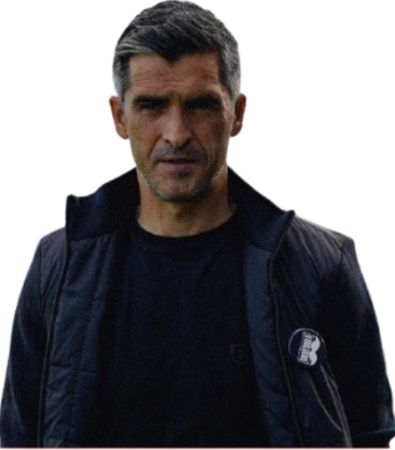
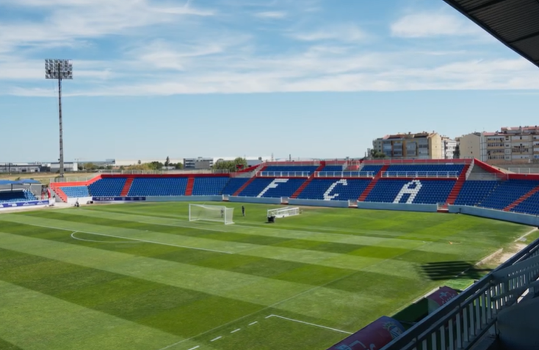

Treinador: Custódio Castro
Custódio Castro, é um antigo futebolista português que se notabilizou como médio-defensivo e que atualmente segue a carreira de treinador de futebol. A sua história desportiva divide-se entre uma carreira sólida como jogador e uma transição para a liderança técnica, marcada por passagens em clubes importantes de Portugal.

Estádio: Complexo Desportivo FC Alverca
O Alverca disputa os seus jogos no Complexo Desportivo FC Alverca, um estádio moderno e funcional.Situado em Alverca do Ribatejo, é um espaço que tem crescido em estrutura e ambição, acompanhando a evolução do clube nos últimos anos.

Estilo de Jogo:
No FC Alverca, Custódio Castro implementou um estilo de jogo focado na competitividade, agressividade e na luta pelos três pontos em todos os jogos.
"Voa Alverca!"